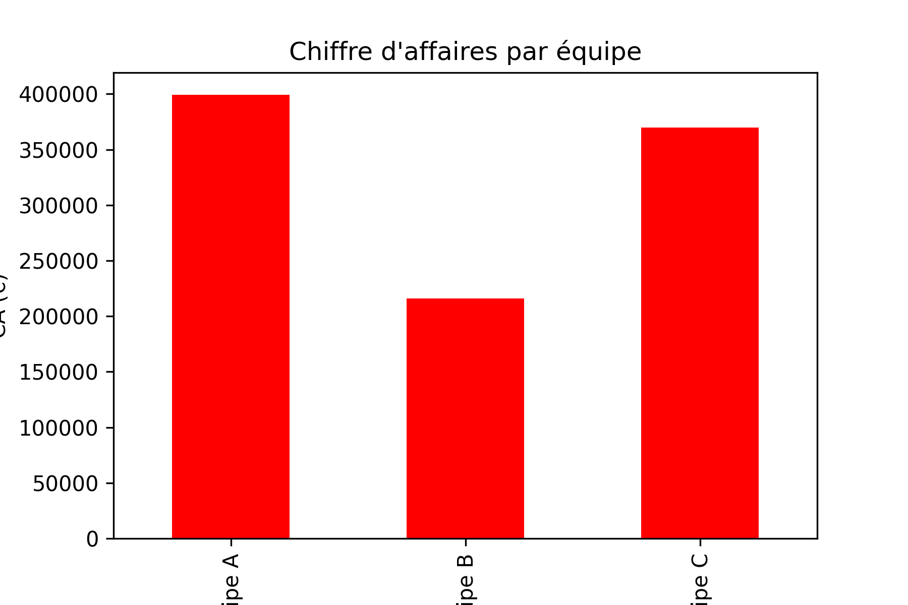
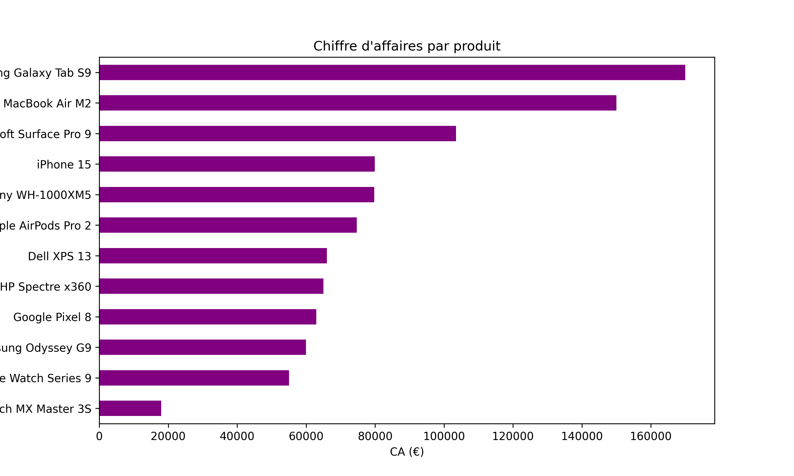
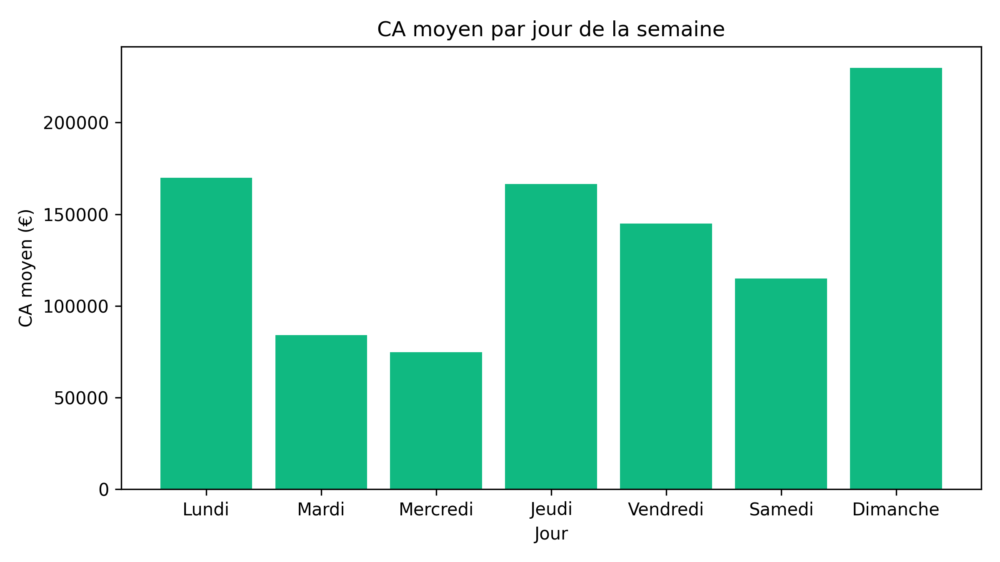
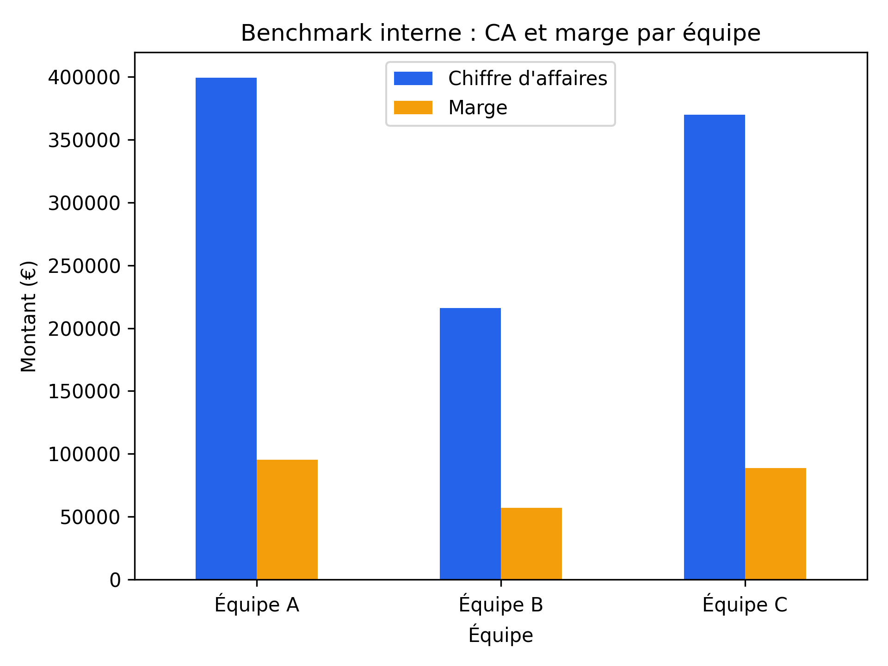
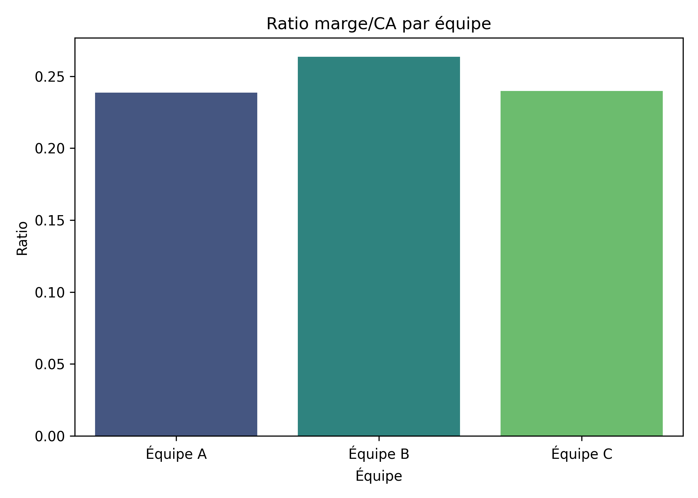

Projet d’analyse des ventes numériques
Ce projet couvre l’analyse de performance commerciale pour des produits numériques (ordinateurs, smartphones, tablettes, accessoires), depuis la préparation des données jusqu’au rapport final. Il met en évidence les tendances clés par région, produit, équipe et période, puis propose un benchmark interne et des recommandations actionnables pour le pilotage.
Données et méthode
Sources et variables
- Colonnes clés : Date, Région, Équipe, Produit, Catégorie, Prix unitaire, Quantité vendue, Chiffre d’affaires, Marge
- Périmètre : ventes multi-régions et multi-équipes sur une période courte (jour par jour)
- Nettoyage : typage des dates, contrôle des champs numériques, normalisation des libellés
Approche analytique
- Descriptif : agrégations par région, produit, équipe et jour
- Temporel : évolution du CA, moyenne mobile (3 jours), pics/creux
- Benchmark : heatmap équipe × région, parts par catégorie, ratios marge/CA
Outils : Python (Pandas, Matplotlib, Seaborn), génération d’images PNG pour le rapport et le portfolio.
Statistiques descriptives
Vue globale
- CA total : somme du chiffre d’affaires (EUR)
- Marge totale : somme de la marge (EUR)
- Prix unitaire moyen : moyenne des prix
- Quantité moyenne vendue : moyenne des quantités

Par région
Répartition du CA par zone géographique pour identifier les locomotives et les zones à renforcer.

Par équipe
Benchmark interne simple des performances commerciales entre équipes.

Par produit
Identification des best-sellers (CA/volume) et des produits premium (prix/marge).

Temporel (jour par jour)
Lecture de l’évolution du CA, détection de pics et creux, et tendance via moyenne mobile.



src des images.Benchmark interne
CA et marge par équipe
Comparaison directe des montants pour visualiser la hiérarchie interne des performances.

Heatmap équipe × région
Vue croisée des performances, utile pour piloter l’allocation des ressources commerciales.

Répartition par catégorie
Parts de marché du CA par catégorie (ordinateurs, smartphones, tablettes, accessoires).

Ratio marge/CA par équipe
Indicateur d’efficacité commerciale utile pour prioriser les leviers d’optimisation.

Insights et recommandations
Insights
- Locomotives régionales : certaines régions tirent le CA, d’autres nécessitent un renforcement
- Best-sellers : identification claire des produits et segments porteurs
- Efficacité interne : équipes à forte valeur vs. fort volume (axes d’optimisation différenciés)
- Tendance temporelle : pics/creux et fenêtre de performance hebdomadaire à exploiter
Recommandations
- Couverture commerciale : renforcer les zones à faible CA via ciblage et allocation d’effort
- Portefeuille produit : investir sur les best-sellers et ajuster les segments à faible marge
- Pilotage équipes : aligner objectifs et moyens en fonction des performances observées
- Calendrier opérationnel : capitaliser sur les jours/semaine les plus performants
Un rapport PDF synthétique peut être généré automatiquement (constats + recommandations), prêt pour diffusion.